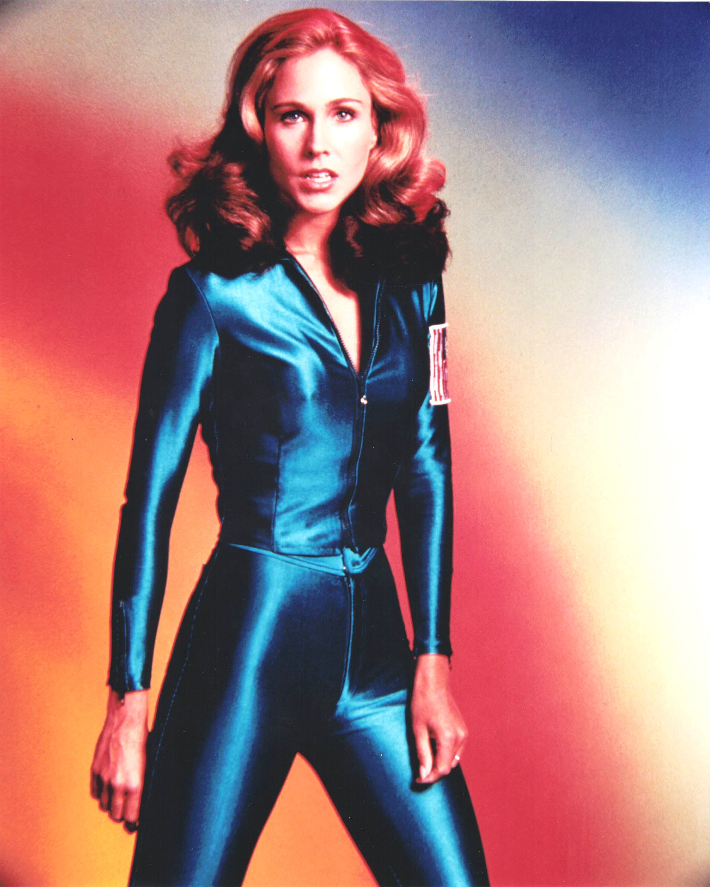

Product No. HEC-0072
$12.99
Shipping: $8.95
Description
8x10 color photograph
Full Description
Erin Gray is an American actress and model best known for her roles in the science-fiction television series "Buck Rogers in the 25th Century" and the sitcom "Silver Spoons." Born January 7, 1950, in Honolulu, Hawaii, she began her career as a successful fashion model before moving into acting. Gray became widely recognized as Colonel Wilma Deering in "Buck Rogers in the 25th Century," which aired from 1979 to 1981. Starring opposite Gil Gerard as Buck Rogers, she played a confident and capable military officer in a futuristic world. Her sleek costumes and commanding screen presence helped make Wilma Deering one of the most memorable female science-fiction characters of the era. She later became familiar to television audiences as Kate Summers Stratton on "Silver Spoons," starring alongside Ricky Schroder. The popular sitcom aired during the 1980s and gave Gray another long-running television role. Gray also appeared in numerous other television programs, movies, and guest roles, including "Magnum, P.I.," "The Fall Guy," "Murder, She Wrote," "Baywatch," and "Profiler." She has continued making appearances at science-fiction conventions and fan events. Erin Gray remains especially popular with collectors because of her association with "Buck Rogers in the 25th Century" and classic 1970s and 1980s television. Her autographs, signed photographs, and science-fiction memorabilia continue to attract fans of vintage television and space-adventure series.
Condition
Excellent condition